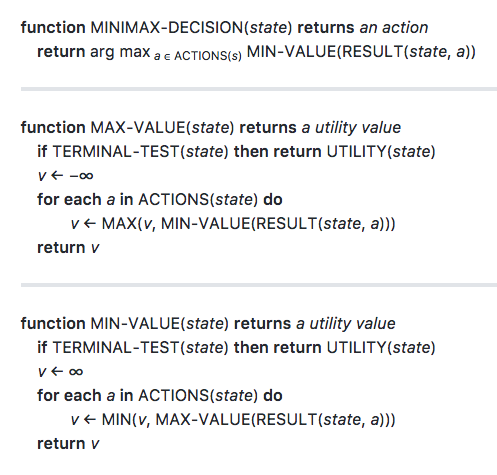
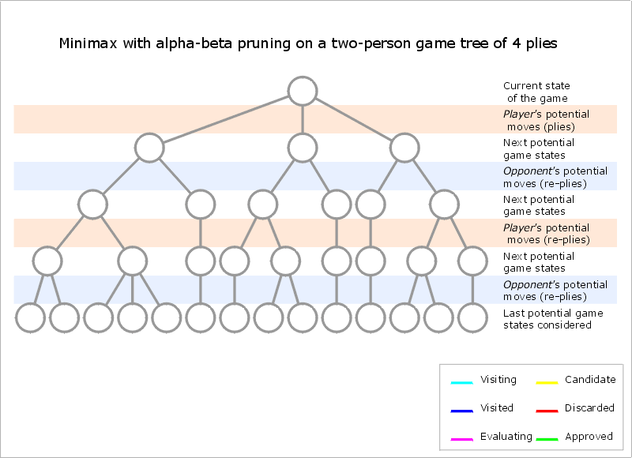

Adversarial Search
This lesson is mainly about minimax, which extends search to multi-agent domains (i.e., problems where your agent isn't the only influence on the environment). Minimax agents have been very successful in some games (like Chess), but the central idea is even more important: your agent can make better decisions by considering the consequences of its actions.
Main Topics of this lesson are:
- Adversarial Search
- Minimax Algorithm
- Alpha-Beta Pruning
- Evaluation Functions
- Isolation Game Player
- Multi-player Probabilistic Games
Minimax Algorithm
Minimax (sometimes MinMax, MM[1] or saddle point[2]) is a decision rule used in artificial intelligence, decision theory, game theory, statistics and philosophy for minimizing the possible loss for a worst case (maximum loss) scenario. When dealing with gains, it is referred to as "maximin"—to maximize the minimum gain. Originally formulated for two-player zero-sum game theory, covering both the cases where players take alternate moves and those where they make simultaneous moves, it has also been extended to more complex games and to general decision-making in the presence of uncertainty.
A minimax algorithm[5] is a recursive algorithm for choosing the next move in an n-player game, usually a two-player game. A value is associated with each position or state of the game. This value is computed by means of a position evaluation function and it indicates how good it would be for a player to reach that position. The player then makes the move that maximizes the minimum value of the position resulting from the opponent's possible following moves. If it is A's turn to move, A gives a value to each of their legal moves.
A possible allocation method consists in assigning a certain win for A as +1 and for B as −1. This leads to combinatorial game theory as developed by John Horton Conway. An alternative is using a rule that if the result of a move is an immediate win for A it is assigned positive infinity and, if it is an immediate win for B, negative infinity. The value to A of any other move is the minimum of the values resulting from each of B's possible replies. For this reason, A is called the maximizing player and B is called the minimizing player, hence the name minimax algorithm. The above algorithm will assign a value of positive or negative infinity to any position since the value of every position will be the value of some final winning or losing position. Often this is generally only possible at the very end of complicated games such as chess or go, since it is not computationally feasible to look ahead as far as the completion of the game, except towards the end, and instead positions are given finite values as estimates of the degree of belief that they will lead to a win for one player or another.
This can be extended if we can supply a heuristic evaluation function which gives values to non-final game states without considering all possible following complete sequences. We can then limit the minimax algorithm to look only at a certain number of moves ahead. This number is called the "look-ahead", measured in "plies". For example, the chess computer Deep Blue (the first one to beat a reigning world champion, Garry Kasparov at that time) looked ahead at least 12 plies, then applied a heuristic evaluation function.
The algorithm can be thought of as exploring the nodes of a game tree. The effective branching factor of the tree is the average number of children of each node (i.e., the average number of legal moves in a position). The number of nodes to be explored usually increases exponentially with the number of plies (it is less than exponential if evaluating forced moves or repeated positions). The number of nodes to be explored for the analysis of a game is therefore approximately the branching factor raised to the power of the number of plies. It is therefore impractical to completely analyze games such as chess using the minimax algorithm.
The performance of the naïve minimax algorithm may be improved dramatically, without affecting the result, by the use of alpha-beta pruning. Other heuristic pruning methods can also be used, but not all of them are guaranteed to give the same result as the un-pruned search.
A naive minimax algorithm may be trivially modified to additionally return an entire Principal Variation along with a minimax score.
Example
Suppose the game being played only has a maximum of two possible moves per player each turn. The algorithm generates the tree on the right, where the circles represent the moves of the player running the algorithm (maximizing player), and squares represent the moves of the opponent (minimizing player). Because of the limitation of computation resources, as explained above, the tree is limited to a look-ahead of 4 moves.
The algorithm evaluates each leaf node using a heuristic evaluation function, obtaining the values shown. The moves where the maximizing player wins are assigned with positive infinity, while the moves that lead to a win of the minimizing player are assigned with negative infinity. At level 3, the algorithm will choose, for each node, the smallest of the child node values, and assign it to that same node (e.g. the node on the left will choose the minimum between "10" and "+∞", therefore assigning the value "10" to itself). The next step, in level 2, consists of choosing for each node the largest of the child node values. Once again, the values are assigned to each parent node. The algorithm continues evaluating the maximum and minimum values of the child nodes alternately until it reaches the root node, where it chooses the move with the largest value (represented in the figure with a blue arrow). This is the move that the player should make in order to minimize the maximum possible loss.

Isolation Game
We're going to be programing an agent to play the game of Isolation
Representing the Game State in Code
Before we can code the minimax algorithm, we need a way to keep track of the game state while the program runs. We'll start with a simple class for the mini-Isolation game from the lecture examples.
Game Class Requirements
The game state object needs to enforce all of the rules of the game, and represent all of the information describing a single configuration of the game at a specific point in time. There isn't only one "Right Way" to do this.
The basic Board class is going to be very simple. At first, we're going to start by writing the constructor method __init__() and will add functionalities as we move forward. The Isolation GameState class needs properties that can:
- keep track of which cells are open and closed
- identify which player has initiative (whose turn it is to move)
- track the current position each player on the board
Note: the constructor should make sure that the bottom corner cell is blocked when a new instance is created!
We will assume that board origin is in the top left corner and set the x axis to move from left to right and the y axis to move from top to bottom (the usual semantics for 2d array indexing). Each cell on the board can be described by an ordered pair (x, y). Thus (0, 0) is the top-left corner cell; (2, 1) is the bottom right corner (the blocked cell).
# This is just one possible solution, there are many # other options that will work just as well or better xlim, ylim = 3, 2 # board dimension constants class GameState: """ Attributes ---------- _board: list(list) Represent the board with a 2d array _board[x][y] where open spaces are 0 and closed spaces are 1 and a coordinate system where [0][0] is the top- left corner, and x increases to the right while y increases going down (this is an arbitrary convention choice -- there are many other options that are just as good) _parity: bool Keep track of active player initiative (which player has control to move) where 0 indicates that player one has initiative and 1 indicates player two _player_locations: list(tuple) Keep track of the current location of each player on the board where position is encoded by the board indices of their last move, e.g., [(0, 0), (1, 0)] means player one is at (0, 0) and player two is at (1, 0) """ def __init__(self): # single-underscore prefix on attribute names means # that the attribute is "private" (Python doesn't truly # support public/private members, so this is only a # convention) self._board = [[0] * ylim for _ in range(xlim)] self._board[-1][-1] = 1 # block lower-right corner self._parity = 0 self._player_locations = [None, None] from gamestate import * print("Creating empty game board...") emptyState = GameState() print("Everything looks good!")
Adding Functionality to the Game Class
We will use the interface for adversarial search problems defined in Chapter 5.1 of Artificial Intelligence: a Modern Approach, which includes the following five functions:
player(): return the active player in the current stateactions(): return a list of the legal actions in the current stateresult(action): return a new state that results from applying the given action in the current stateterminal_test(): return True if the current state is terminal, and False otherwiseutility(player):return +inf if the game is terminal and the specified player wins, return -inf if the game is terminal and the specified player loses, and return 0 if the game is not terminal.
We will extend that interface with one additional domain specific method, which will simplify implementing several techniques later
liberties(loc): return a list of cells in the neighborhood of the specified location that are open
from copy import deepcopy xlim, ylim = 3, 2 # board dimensions # The eight movement directions possible for a chess queen RAYS = [(1, 0), (1, -1), (0, -1), (-1, -1), (-1, 0), (-1, 1), (0, 1), (1, 1)] class GameState: """ Attributes ---------- _board: list(list) Represent the board with a 2d array _board[x][y] where open spaces are 0 and closed spaces are 1 _parity: bool Keep track of active player initiative (which player has control to move) where 0 indicates that player one has initiative and 1 indicates player 2 _player_locations: list(tuple) Keep track of the current location of each player on the board where position is encoded by the board indices of their last move, e.g., [(0, 0), (1, 0)] means player 1 is at (0, 0) and player 2 is at (1, 0) """ def __init__(self): self._board = [[0] * ylim for _ in range(xlim)] self._board[-1][-1] = 1 # block lower-right corner self._parity = 0 self._player_locations = [None, None] def actions(self): """ Return a list of legal actions for the active player """ return self.liberties(self._player_locations[self._parity]) def player(self): """ Return the id of the active player """ return self._parity def result(self, action): """ Return a new state that results from applying the given action in the current state """ assert action in self.actions(), "Attempted forecast of illegal move" newBoard = deepcopy(self) newBoard._board[action[0]][action[1]] = 1 newBoard._player_locations[self._parity] = action newBoard._parity ^= 1 return newBoard def terminal_test(self): """ return True if the current state is terminal, and False otherwise Hint: an Isolation state is terminal if _either_ player has no remaining liberties (even if the player is not active in the current state) """ return (not self._has_liberties(self._parity) or not self._has_liberties(1 - self._parity)) def liberties(self, loc): """ Return a list of all open cells in the neighborhood of the specified location. The list should include all open spaces in a straight line along any row, column or diagonal from the current position. (Tokens CANNOT move through obstacles or blocked squares in queens Isolation.) """ if loc is None: return self._get_blank_spaces() moves = [] for dx, dy in RAYS: # check each movement direction _x, _y = loc while 0 <= _x + dx < xlim and 0 <= _y + dy < ylim: _x, _y = _x + dx, _y + dy if self._board[_x][_y]: # stop at any blocked cell break moves.append((_x, _y)) return moves def _has_liberties(self, player_id): """ Check to see if the specified player has any liberties """ return any(self.liberties(self._player_locations[player_id])) def _get_blank_spaces(self): """ Return a list of blank spaces on the board.""" return [(x, y) for y in range(ylim) for x in range(xlim) if self._board[x][y] == 0] from gamestate import * print("Creating empty game board...") g = GameState() print("Checking active player on an empty board...") if g.player() != 0: print("Failed\n Uh Oh! Your game did not return player " + "id 0 on an empty board.") else: print("Passed.") print("Checking terminal test on an empty board...") if g.terminal_test() != False: print("Failed\n Uh Oh! Your game marked an empty game state as terminal.") else: print("Passed.") print("Checking liberties on an empty board...") p1_liberties = g.liberties(None) if len(p1_liberties) != 5: print("Failed\n Uh oh! Your game did not return 5 empty " + "cell locations as liberties on an empty board.") else: print("Passed.") print("Getting legal moves for player 1...") p1_empty_moves = g.actions() print("Found {} legal moves.".format(len(p1_empty_moves or []))) print("Applying move {} for player 1...".format(p1_empty_moves[0])) g1 = g.result(p1_empty_moves[0]) print("Getting legal moves for player 2...") p2_empty_moves = g1.actions() if len(p2_empty_moves) != 4: print("Failed\n Uh oh! Your game did not return the expected " + "number of actions for player 2!") else: print("Passed.") print("\nPlaying a full game") for _ in range(5): if g.terminal_test(): break g = g.result(g.actions()[0]) print("Checking terminal test on a terminal board...") if g.terminal_test() != True: print("Failed\n Uh oh! Your game did not correctly evalute " + "a terminal game state as terminal!") else: print("Passed.")
Note: The example solution above is intended to be simple to reason about; it is not designed for high performance. Returning copies of the game state when forecasting moves has significant overhead (especially in Python), and returning a complete list of all legal moves is inefficient (a generator would be better), but both conventions simplify the underlying implementation & interface for the minimax algorithm. We will use a similar interface in the project.
When performance matters, it is typical to use bitboards (which are used in the project library).
Game Tree: When we lay out all the possible moves (plays) in a tree format, it's called a "game tree". Doing so, we'll find the branches (sequence of moves) that lead us to winning and branches that lead us to losing. Moreover, having the map/tree of the entire possibilities of the game, we'd like to form an idea around what are the best possible first moves (more likely end up winning). Now, the question is how do we tell computers what move to pick? The answer is through Minimax Algorithm. The idea behind minimax is that we'd like to maximize our score while knowing that our opponent would want to minimize our score.
Coding Minimax
We will start by coding helper functions: the min-value function, and the max-value function. Notice that the min-value() and max-value() functions only need to return a single number -- a "utility value" -- which is the score of the current branch.
EXTREMELY IMPORTANT NOTE: It isn't clear from the pseudocode below, but the UTILITY() value is ALWAYS relative to the active player at the root node of the search tree. The utility is NOT calculated for the "active" player. The search is performed from the perspective of the active player at the root node.
from copy import deepcopy xlim, ylim = 3, 2 # board dimensions # The eight movement directions possible for a chess queen RAYS = [(1, 0), (1, -1), (0, -1), (-1, -1), (-1, 0), (-1, 1), (0, 1), (1, 1)] class GameState: """ Attributes ---------- _board: list(list) Represent the board with a 2d array _board[x][y] where open spaces are 0 and closed spaces are 1 _parity: bool Keep track of active player initiative (which player has control to move) where 0 indicates that player one has initiative and 1 indicates player 2 _player_locations: list(tuple) Keep track of the current location of each player on the board where position is encoded by the board indices of their last move, e.g., [(0, 0), (1, 0)] means player 1 is at (0, 0) and player 2 is at (1, 0) """ def __init__(self): self._board = [[0] * ylim for _ in range(xlim)] self._board[-1][-1] = 1 # block lower-right corner self._parity = 0 self._player_locations = [None, None] def actions(self): """ Return a list of legal actions for the active player """ return self.liberties(self._player_locations[self._parity]) def player(self): """ Return the id of the active player """ return self._parity def result(self, action): """ Return a new state that results from applying the given action in the current state """ assert action in self.actions(), "Attempted forecast of illegal move" newBoard = deepcopy(self) newBoard._board[action[0]][action[1]] = 1 newBoard._player_locations[self._parity] = action newBoard._parity ^= 1 return newBoard def terminal_test(self): """ return True if the current state is terminal, and False otherwise Hint: an Isolation state is terminal if _either_ player has no remaining liberties (even if the player is not active in the current state) """ return (not self._has_liberties(self._parity) or not self._has_liberties(1 - self._parity)) def utility(self, player_id): """ return +inf if the game is terminal and the specified player wins, return -inf if the game is terminal and the specified player loses, and return 0 if the game is not terminal """ if not self.terminal_test(): return 0 player_id_is_active = (player_id == self.player()) active_has_liberties = self._has_liberties(self.player()) active_player_wins = (active_has_liberties == player_id_is_active) return float("inf") if active_player_wins else float("-inf") def liberties(self, loc): """ Return a list of all open cells in the neighborhood of the specified location. The list should include all open spaces in a straight line along any row, column or diagonal from the current position. (Tokens CANNOT move through obstacles or blocked squares in queens Isolation.) """ if loc is None: return self._get_blank_spaces() moves = [] for dx, dy in RAYS: # check each movement direction _x, _y = loc while 0 <= _x + dx < xlim and 0 <= _y + dy < ylim: _x, _y = _x + dx, _y + dy if self._board[_x][_y]: # stop at any blocked cell break moves.append((_x, _y)) return moves def _has_liberties(self, player_id): """ Check to see if the specified player has any liberties """ return any(self.liberties(self._player_locations[player_id])) def _get_blank_spaces(self): """ Return a list of blank spaces on the board.""" return [(x, y) for y in range(ylim) for x in range(xlim) if self._board[x][y] == 0] def min_value(gameState): """ Return the game state utility if the game is over, otherwise return the minimum value over all legal successors """ if gameState.terminal_test(): return gameState.utility(0) v = float("inf") for a in gameState.actions(): v = min(v, max_value(gameState.result(a))) return v def max_value(gameState): """ Return the game state utility if the game is over, otherwise return the maximum value over all legal successors """ if gameState.terminal_test(): return gameState.utility(0) v = float("-inf") for a in gameState.actions(): v = max(v, min_value(gameState.result(a))) return v import minimax_helpers from gamestate import * g = GameState() inf = float("inf") actions = [((0, 0), inf), ((1, 0), -inf), ((2, 0), inf), ((0, 1), inf), ((1, 1), -inf)] if all(minimax_helpers.min_value(g.result(a)) == ev for a, ev in actions): print("Looks like everything works!") else: print("Uh oh! Not all the scores matched.")
Note: Technically, any pair of values can be used to indicate wins and losses so long as they admit an ordering such that the score for winning is greater than the score for losing; e.g., instead of -inf & +inf you could you use -π & π/2, or 100.99 & 101.0, or -1 & +1 (which is what Thad uses in lecture). It is common to use -∞ & +∞ when a heuristic function is used (which we'll do in another project for this module) because every possible heuristic estimate lies between those bounds, which avoids a possible bug where your agent prefers a non-terminal state scored by the heuristic to a terminal state with a "true" win or loss score.
Propagating min-max values along the tree: Check out the example below, which is a smaller section of a game tree:
- To begin with, boxes E, F, G, H, I, and J have just one child. As such, they simply take the value of their child.
- Box C is a minimizer node, and hence chooses the minimum of boxes F, and G which is G's value of -1.
- Box A is a maximizing node, and chooses the maximum of boxes B, C, and D which is D's value of +1.
Minimax Decision: Choosing the Best Branch
The minimax_decision() function should loop over the legal moves from the current state and return the move that has the highest score. The scores are determined by mutually recursive calls between the min and max value helper functions until a terminal state is reached, and propagated back up the tree as the call stack unwinds.
Like before, the root node of the tree is itself a "max" node, so we call min_value() first on each legal move.
Hints:
- One way to implement this function has a body that looks very similar to the
max_value()function, except that you must keep track of both the best score and best move (and return only the best move) - There are also clever ways to do it using the built-in max function and the optional keyword argument
key.
from minimax_helpers import * # Solution using an explicit loop based on max_value() def _minimax_decision(gameState): """ Return the move along a branch of the game tree that has the best possible value. A move is a pair of coordinates in (column, row) order corresponding to a legal move for the searching player. You can ignore the special case of calling this function from a terminal state. """ best_score = float("-inf") best_move = None for m in gameState.actions(): v = min_value(gameState.result(m)) if v > best_score: best_score = v best_move = m return best_move # This solution does the same thing using the built-in `max` function # Note that "lambda" expressions are Python's version of anonymous functions def minimax_decision(gameState): """ Return the move along a branch of the game tree that has the best possible value. A move is a pair of coordinates in (column, row) order corresponding to a legal move for the searching player. You can ignore the special case of calling this function from a terminal state. """ # The built in `max()` function can be used as argmax! return max(gameState.actions(), key=lambda m: min_value(gameState.result(m))) #### minimax_helpers.py def min_value(gameState): """ Return the game state utility if the game is over, otherwise return the minimum value over all legal successors """ if gameState.terminal_test(): return gameState.utility(0) v = float("inf") for a in gameState.actions(): v = min(v, max_value(gameState.result(a))) return v def max_value(gameState): """ Return the game state utility if the game is over, otherwise return the maximum value over all legal successors """ if gameState.terminal_test(): return gameState.utility(0) v = float("-inf") for a in gameState.actions(): v = max(v, min_value(gameState.result(a))) return v
Conclusion:
We've now completed the minimax algorithm. The code now correctly choose one of the winning branches of the game tree from an empty mini-isolation board. Moreover, if we implement the rules to another game (like tic-tac-toe) in the GameState class, the minimax code will work without any changes on that game, too!
Next, we will cover additional optimizations like depth-limiting, alpha-beta pruning, and iterative deepening that will allow minimax to work on even larger games (e.g., checkers, chess, etc.), and the project for this module will involve modifying and extending your code from this project to implement some of those techniques.
These additional optimizations are required since what we've covered so far was through brute-force search. In larger scale games, it's virtually impossible to do so.
Optimizing Minimax Search
Here, we will address several of the limitations of the basic minimax search algorithm, with an emphasis on techniques that are applicable to the project.
Extra reading materials on this topic:
- Game Tree Searching by Min / Max Approximation by Ron Rivest, MIT
- Deep Blue by IBM
- AlphaGo from DeepMind
Depth Limited Search
Minimax search is guaranteed to find an optimal move, but it is impractical for all but the most trivial games. Game trees grow exponentially with each additional level of search, so the algorithm runtime is also exponential. With only finite computational resources available, we need a way to bound the runtime of the search. Using a fixed depth limit is the simplest mechanism to limit the runtime (although it introduces new problems that we'll see later).
math to estimate a value to use for a fixed depth limit
###### minimax.py ######## def minimax_decision(gameState, depth): """ Return the move along a branch of the game tree that has the best possible value. A move is a pair of coordinates in (column, row) order corresponding to a legal move for the searching player. You can ignore the special case of calling this function from a terminal state. """ best_score = float("-inf") best_move = None for a in gameState.actions(): # call has been updated with a depth limit v = min_value(gameState.result(a), depth - 1) if v > best_score: best_score = v best_move = a return best_move def min_value(gameState, depth): """ Return the value for a win (+1) if the game is over, otherwise return the minimum value over all legal child nodes. """ if gameState.terminal_test(): return gameState.utility(0) # New conditional depth limit cutoff if depth <= 0: # "==" could be used, but "<=" is safer return 0 v = float("inf") for a in gameState.actions(): # the depth should be decremented by 1 on each call v = min(v, max_value(gameState.result(a), depth - 1)) return v def max_value(gameState, depth): """ Return the value for a loss (-1) if the game is over, otherwise return the maximum value over all legal child nodes. """ if gameState.terminal_test(): return gameState.utility(0) # New conditional depth limit cutoff if depth <= 0: # "==" could be used, but "<=" is safer return 0 v = float("-inf") for a in gameState.actions(): # the depth should be decremented by 1 on each call v = max(v, min_value(gameState.result(a), depth - 1)) return v ###### gamestate.py ###### # Please use this implementation for compatability with the test cases from copy import deepcopy call_counter = 0 xlim, ylim = 3, 2 # board dimensions # The eight movement directions possible for a chess queen RAYS = [(1, 0), (1, -1), (0, -1), (-1, -1), (-1, 0), (-1, 1), (0, 1), (1, 1)] class GameState: """ Attributes ---------- _board: list(list) Represent the board with a 2d array _board[x][y] where open spaces are 0 and closed spaces are 1 _parity: bool Keep track of active player initiative (which player has control to move) where 0 indicates that player one has initiative and 1 indicates player 2 _player_locations: list(tuple) Keep track of the current location of each player on the board where position is encoded by the board indices of their last move, e.g., [(0, 0), (1, 0)] means player 1 is at (0, 0) and player 2 is at (1, 0) """ def __init__(self): self._board = [[0] * ylim for _ in range(xlim)] self._board[-1][-1] = 1 # block lower-right corner self._parity = 0 self._player_locations = [None, None] def actions(self): """ Return a list of legal actions for the active player """ return self.liberties(self._player_locations[self._parity]) def player(self): """ Return the id of the active player """ return self._parity def result(self, action): """ Return a new state that results from applying the given action in the current state """ assert action in self.actions(), "Attempted forecast of illegal move" newBoard = deepcopy(self) newBoard._board[action[0]][action[1]] = 1 newBoard._player_locations[self._parity] = action newBoard._parity ^= 1 return newBoard def terminal_test(self): """ return True if the current state is terminal, and False otherwise Hint: an Isolation state is terminal if _either_ player has no remaining liberties (even if the player is not active in the current state) """ global call_counter call_counter += 1 return (not self._has_liberties(self._parity) or not self._has_liberties(1 - self._parity)) def utility(self, player_id): """ return +inf if the game is terminal and the specified player wins, return -inf if the game is terminal and the specified player loses, and return 0 if the game is not terminal """ if not self.terminal_test(): return 0 player_id_is_active = (player_id == self.player()) active_has_liberties = self._has_liberties(self.player()) active_player_wins = (active_has_liberties == player_id_is_active) return float("inf") if active_player_wins else float("-inf") def liberties(self, loc): """ Return a list of all open cells in the neighborhood of the specified location. The list should include all open spaces in a straight line along any row, column or diagonal from the current position. (Tokens CANNOT move through obstacles or blocked squares in queens Isolation.) """ if loc is None: return self._get_blank_spaces() moves = [] for dx, dy in RAYS: # check each movement direction _x, _y = loc while 0 <= _x + dx < xlim and 0 <= _y + dy < ylim: _x, _y = _x + dx, _y + dy if self._board[_x][_y]: # stop at any blocked cell break moves.append((_x, _y)) return moves def _has_liberties(self, player_id): """ Check to see if the specified player has any liberties """ return any(self.liberties(self._player_locations[player_id])) def _get_blank_spaces(self): """ Return a list of blank spaces on the board.""" return [(x, y) for y in range(ylim) for x in range(xlim) if self._board[x][y] == 0] ###### testcode.py ###### import minimax import gamestate as game # Test the depth limit by checking the number of nodes visited # -- recall that minimax visits every node in the search tree, # so if we search depth one on an empty board then minimax should # visit each of the five open spaces depth_limit = 1 expected_node_count = 5 rootNode = game.GameState() _ = minimax.minimax_decision(rootNode, depth_limit) print("Expected node count: {}".format(expected_node_count)) print("Your node count: {}".format(game.call_counter)) if game.call_counter == expected_node_count: print("That's right! Looks like your depth limit is working!") else: print("Uh oh...looks like there may be a problem.")
Evaluation Function
The earlier implementation of depth limited search assumed that the value of any state where search cut off was zero—but we don't know without finishing the search that those states have a value of zero (and, in fact, for the isolation game we know that they do not have a value of zero because there are no ties, so every state is either a win or a loss for the current player). Therefore, we can improve the performance of depth limited search using the concept of an "evaluation function" (also called a heuristic function), which is like "intuition" for the search procedure about which moves are likely to result in wins or losses.
# DO NOT MODIFY THE PLAYER ID player_id = 0 def my_moves(gameState): loc = gameState._player_locations[player_id] return len(gameState.liberties(loc)) def minimax_decision(gameState, depth): """ Return the move along a branch of the game tree that has the best possible value. A move is a pair of coordinates in (column, row) order corresponding to a legal move for the searching player. You can ignore the special case of calling this function from a terminal state. """ best_score = float("-inf") best_move = None for a in gameState.actions(): # call has been updated with a depth limit v = min_value(gameState.result(a), depth - 1) if v > best_score: best_score = v best_move = a return best_move def min_value(gameState, depth): """ Return the value for a win (+1) if the game is over, otherwise return the minimum value over all legal child nodes. """ if gameState.terminal_test(): return gameState.utility(0) if depth <= 0: return my_moves(gameState) v = float("inf") for a in gameState.actions(): # the depth should be decremented by 1 on each call v = min(v, max_value(gameState.result(a), depth - 1)) return v def max_value(gameState, depth): """ Return the value for a loss (-1) if the game is over, otherwise return the maximum value over all legal child nodes. """ if gameState.terminal_test(): return gameState.utility(0) if depth <= 0: return my_moves(gameState) v = float("-inf") for a in gameState.actions(): # the depth should be decremented by 1 on each call v = max(v, min_value(gameState.result(a), depth - 1)) return v
Quiescent Search
Quiescence search is an algorithm typically used to evaluate minimax game trees in game-playing computer programs. It mitigates the effect of the horizon problem faced by AI engines for various games like chess and Go.
Human players usually have enough intuition to decide whether to abandon a bad-looking move, or search a promising move to a great depth. A quiescence search attempts to emulate this behavior by instructing a computer to search "interesting" positions to a greater depth than "quiet" ones to make sure there are no hidden traps and to get a better estimate of its value.
As the main motive of quiescence search is usually to get a good value out of an imperfect evaluation function, it may also make sense to detect wide fluctuations in values returned by a simple heuristic evaluator over several ply (In two-player sequential games, a ply is one turn taken by one of the players. The word is used to clarify what is meant when one might otherwise say "turn").
The Horizon Effect: The horizon effect is a problem in artificial intelligence which can occur when a search of a game tree is limited. In many games, the number of possible states or positions is too great for an exhaustive search to be practical. Computer programs search a subset of the game tree and use heuristics to estimate the value of individual positions. Due to the limitation of this search, it's possible for the computer to identify a move that is optimal up to the given search depth, but that leads to a suboptimal position beyond that depth, of which the computer is unaware. Quiescence search attempts to mitigate this issue by extending the search depth in high activity positions where the heuristic value may have significant fluctuations between moves.
Iterative Deepening
Iterative deepening is a search technique that allows minimax-style search functions to return an approximate solution when computational resources are bounded. The basic idea is to start with a small depth-limited search, and grow the depth limit until the resource limit (usually search time) expires.
from minimax import minimax_decision def get_action(gameState, depth_limit): # Turns out "iterative deepening" is just a for loop... best_move = None for depth in range(1, depth_limit+1): best_move = minimax_decision(gameState, depth) return best_move
Which one is a good evaluation function for Isolation?
number of my moves - number of opponent moves
The idea is that sometimes evaluation functions can be costly, so the choice of the function depends on the case and should change accordingly.
Alpha-Beta Pruning
Alpha–beta pruning is a search algorithm that seeks to decrease the number of nodes that are evaluated by the minimax algorithm in its search tree. It is an adversarial search algorithm used commonly for machine playing of two-player games (Tic-tac-toe, Chess, Go, etc.). It stops evaluating a move when at least one possibility has been found that proves the move to be worse than a previously examined move. Such moves need not be evaluated further. When applied to a standard minimax tree, it returns the same move as minimax would, but prunes away branches that cannot possibly influence the final decision.
It modifies the minimax algorithm by introducing two new variables: α -- the maximum lower bound of the minimax value -- and β -- the minimum upper bound of the minimax value. In other words: at every state in the game tree α represents the guaranteed worst-case score that the MAX player could achieve, and β represents the guaranteed worst-case score that the MIN player could achieve.
Core idea: The algorithm maintains two values, alpha and beta, which represent the minimum score that the maximizing player is assured of and the maximum score that the minimizing player is assured of respectively. Initially, alpha is negative infinity and beta is positive infinity, i.e. both players start with their worst possible score. Whenever the maximum score that the minimizing player (i.e. the "beta" player) is assured of becomes less than the minimum score that the maximizing player (i.e., the "alpha" player) is assured of (i.e. beta ≤ alpha), the maximizing player need not consider further descendants of this node, as they will never be reached in the actual play.


Pseudocode
function alphabeta(node, depth, α, β, maximizingPlayer) is if depth = 0 or node is a terminal node then return the heuristic value of node if maximizingPlayer then value := −∞ for each child of node do value := max(value, alphabeta(child, depth − 1, α, β, FALSE)) α := max(α, value) if α ≥ β then break (* β cut-off *) return value else value := +∞ for each child of node do value := min(value, alphabeta(child, depth − 1, α, β, TRUE)) β := min(β, value) if α ≥ β then break (* α cut-off *) return value (* Initial call *) alphabeta(origin, depth, −∞, +∞, TRUE)
The estimates of α are only updated in each MAX node, while β is only updated in each MIN node. If the estimate of the upper bound is ever lower than the estimate of the lower bound in any state, then the search can be cut off because there are no values between the upper and lower bounds. Practically this means that your agent could do better by making a different move earlier in the game tree to avoid the pruned state.
Implementing alpha-beta pruning in minimax only adds the two new variables (alpha & beta), and adds a conditional branch to the MIN and MAX nodes to break and return the appropriate bound when a state is pruned.
There's one more difference you'll notice between minimax and alpha-beta: the alpha-beta search function seems to call the max_value() helper from the root node, while minimax calls the min_value() helper. But the pseudocode for alpha-beta search is just hiding some additional complexity: calling max_value() returns the score of the best branch -- but it doesn't tell you what the best branch is. You can implement the algorithm just like the minimax-decision function if you modify it to update alpha between branches.
The last technique we'll cover is alpha-beta pruning, which allows the agent to avoid searching nodes that cannot lead to better outcomes than what they've already searched by keeping track of the upper and lower bounds of the value for each branch. The lower bound is called alpha, and the upper bound is called beta.
def alpha_beta_search(gameState): """ Return the move along a branch of the game tree that has the best possible value. A move is a pair of coordinates in (column, row) order corresponding to a legal move for the searching player. You can ignore the special case of calling this function from a terminal state. """ alpha = float("-inf") beta = float("inf") best_score = float("-inf") best_move = None for a in gameState.actions(): v = min_value(gameState.result(a), alpha, beta) alpha = max(alpha, v) if v > best_score: best_score = v best_move = a return best_move # TODO: modify the function signature to accept an alpha and beta parameter def min_value(gameState, alpha, beta): """ Return the value for a win (+1) if the game is over, otherwise return the minimum value over all legal child nodes. """ if gameState.terminal_test(): return gameState.utility(0) v = float("inf") for a in gameState.actions(): v = min(v, max_value(gameState.result(a), alpha, beta)) if v <= alpha: return v beta = min(beta, v) return v # TODO: modify the function signature to accept an alpha and beta parameter def max_value(gameState, alpha, beta): """ Return the value for a loss (-1) if the game is over, otherwise return the maximum value over all legal child nodes. """ if gameState.terminal_test(): return gameState.utility(0) v = float("-inf") for a in gameState.actions(): v = max(v, min_value(gameState.result(a), alpha, beta)) if v >= beta: return v alpha = max(alpha, v) return v
Heuristic Improvements
Further improvement can be achieved without sacrificing accuracy by using ordering heuristics to search earlier parts of the tree that are likely to force alpha–beta cutoffs. For example, in chess, moves that capture pieces may be examined before moves that do not, and moves that have scored highly in earlier passes through the game-tree analysis may be evaluated before others. Another common, and very cheap, heuristic is the killer heuristic, where the last move that caused a beta-cutoff at the same tree level in the tree search is always examined first. This idea can also be generalized into a set of refutation tables.
Alpha–beta search can be made even faster by considering only a narrow search window (generally determined by guesswork based on experience). This is known as aspiration search. In the extreme case, the search is performed with alpha and beta equal; a technique known as zero-window search, null-window search, or scout search. This is particularly useful for win/loss searches near the end of a game where the extra depth gained from the narrow window and a simple win/loss evaluation function may lead to a conclusive result. If an aspiration search fails, it is straightforward to detect whether it failed high (high edge of window was too low) or low (lower edge of window was too high). This gives information about what window values might be useful in a re-search of the position.
Over time, other improvements have been suggested, and indeed the Falphabeta (fail-soft alpha-beta) idea of John Fishburn is nearly universal and is already incorporated above in a slightly modified form. Fishburn also suggested a combination of the killer heuristic and zero-window search under the name Lalphabeta ("last move with minimal window alpha-beta search").
Further on Alpha-Beta pruning
Since the minimax algorithm and its variants are inherently depth-first, a strategy such as iterative deepening is usually used in conjunction with alpha–beta so that a reasonably good move can be returned even if the algorithm is interrupted before it has finished execution. Another advantage of using iterative deepening is that searches at shallower depths give move-ordering hints, as well as shallow alpha and beta estimates, that both can help produce cutoffs for higher depth searches much earlier than would otherwise be possible.
Algorithms like SSS*, on the other hand, use the best-first strategy. This can potentially make them more time-efficient, but typically at a heavy cost in space-efficiency.
Opening Book
An opening book isn't specific to Minimax search. It's a general technique for game playing that builds on the intuitive idea that we can learn from experience which opening moves are most likely to result in a win. Opening books are usually built by analyzing a large corpus of games between expert players to find the most promising opening lines.
If you don't have a large corpus of historical matches, then you can create a corpus by either using random rollouts (or by using your agent) to play many games while accumulating statistics on which opening moves are best. An opening book can be as simple as a dictionary book = {hashable_game_state: action_to_take} for as many pairs of game states and actions as you choose.
Keep in mind that opening books are estimates of the best move. It's possible for the book to learn bad moves, especially if you don't have much data or if your data is noisy. The game tree grows exponentially, so it can take an enormous number of games to collect reliable statistics on the opening moves. You can improve the quality of the estimates by incorporating more domain knowledge in the process (like the symmetries discussed for 5x5 Isolation).
NOTE: Python3 uses a secure hashing scheme that makes object hashes (generally) non-portable between runs. The game state object in the project can safely be used as a key, but for this quiz you will need to use state.hashable as a key.
import random from gamestate import GameState NUM_ROUNDS = 10 def build_table(num_rounds=NUM_ROUNDS): # Builds a table that maps from game state -> action # by choosing the action that accumulates the most # wins for the active player. (Note that this uses # raw win counts, which are a poor statistic to # estimate the value of an action; better statistics # exist.) from collections import defaultdict, Counter book = defaultdict(Counter) for _ in range(num_rounds): state = GameState() build_tree(state, book) return {k: max(v, key=v.get) for k, v in book.items()} def build_tree(state, book, depth=2): if depth <= 0 or state.terminal_test(): return -simulate(state) action = random.choice(state.actions()) reward = build_tree(state.result(action), book, depth - 1) book[state.hashable][action] += reward return -reward def simulate(state): player_id = state._parity while not state.terminal_test(): state = state.result(random.choice(state.actions())) return -1 if state.utility(player_id) < 0 else 1
Extending Minimax Search
There are several limitations to minimax search (two-player, deterministic, finite games of perfect information), but there have been several minimax algorithms developed to overcome them. This section briefly introduces some of those techniques, and the next section includes links to references you can read for more information. Many of the extensions to minimax can also be applied to more flexible algorithms like Monte Carlo Tree Search, as well.
- Two-player games are limited to two adversarial agents. There are also single-player games like Solitaire and multi-player games.
- Finite games have a finite number actions and a finite number of choices to make on each turn. (Infinite games have continuous action spaces over an interval; for example, continuous chess eliminates the 8x8 grid and allows pieces to move any distance.)
- In deterministic games, taking action A from state S always results in the same successor state S'. For example, chess players are in complete control of where to place pieces when they make a move. By comparison, games of chance allow actions that do not have deterministic outcomes. For example, moves in Backgammon depend on the outcome of a dice roll.
- Perfect information games mean that both players know all information about the current game state. Chess is a game of perfect information, while the Prisoner's Dilemma is a game of incomplete information.
3-player Isolation
text
Multiplayer Alpha-Beta Pruning
Korf, 1991, Multi-player alpha-beta pruning
In the above paper, you will get a chance to generalize minimax search techniques to games with more than three players. As you'll see, alpha-beta pruning doesn't work quite as effectively in this case as in the general case. Here are a few questions to keep in mind while reading through this paper:
- Why might alphabeta pruning only work well in the two player case?
- How does the size of the search tree change with more than two players?
Probabilistic Games
sloppy Isolation
Moderan Variants of Minimax
Minimax with alpha beta pruning is useful - especially as a teaching tool - because it provides strong theoretical guarantees about selecting optimal moves, but in most real-world applications we're often willing to trade some of those guarantees for better empirical performance. There are several variants of Minimax that change or relax different assumptions in order to achieve stronger performance.
We will not cover these algorithms in detail (they rely on the same principles you've already seen). You are encouraged to experiment with these variants:
- Negamax - the minimax algorithm can be simplified for zero-sum games
- Principle Variation Search (i.e., Negascout) - combining negamax with good move ordering determined by null window searches to outperform alpha-beta pruning (i.e., start with a wide cutoff window and shrink it).
- Memory-enhanced Test Driver family (e.g., MTD-f) - performs a series of searches starting with only null window searches while keeping a memory store of visited states (i.e., start with a zero-width window and grow it); empirically shown to be the most efficient minimax search.
- Best Node Search - repeatedly guess and check values for the bounds on the minimax value of each branch; empirically shown to be the most efficient minimax algorithm on random trees.
Going Beyond Minimax
Adversarial Search has been a very active topic in the past several years. Adversarial
- Monte Carlo Tree Search
- Reinforcement Learning policy
Monte Carlo Tree Search
Monte Carlo Tree Search is an alternative to Minimax search that has been used successfully in many modern applications. MCTS is a general search technique that can be trivially extended to adversarial search. The main benefit of MCTS vs Minimax is that it is an aheuristic search—you do not need a good search heuristic in the domain to get reasonable results, and it works better than minimax in extremely large domains (most Go agents—including AlphaGo and AlphaZero—use MCTS).

How it Works
MCTS works by combining tree search with simulation; rather than using a heuristic to estimate the value of each leaf node of the search tree, it instead quickly simulates the remaining game according to some default policy, and uses many replications of those rollouts to estimate the value of each possible action. The MCTS algorithm includes four phases: Selection, Expansion, Simulation, and Backpropagation. Pseudocode for each phase is shown below, along with the backup step for 2-player games.
It is possible to perform MCTS with uniform sampling of the action space, but that tends to be inefficient in terms of sampling. Upper Confidence Bound for Trees (UCT) is an alternative sampling strategy that tries to sample more promising actions more frequently than other actions. It has been shown that MCTS converges to the minimax value of a search tree as the number of simulations goes towards infinity.

The MCTS Reward Function
The reward function in MCTS does not rely on a heuristic, but the semantics of the reward can be confusing. In the formulation presented in the pseudocode above, the default policy should return +1 if the agent holding initiative at the start of a simulation loses and -1 if the active agent when the simulation starts wins because nodes store the reward relative to their parent in the game tree.
But...why?
The BestChild() function chooses the action a that maximizes Q over the child nodes v' of the input node v, so the value of Q should be higher if taking action a from state v will lead to the player with initiative in state v (the parent) winning from state v' (the child), and lower if taking the action will lead to a loss.

The figure above illustrates the simplest representation of the four possible cases for new node expansion.
- Starting from v=v0, search may expand action a0,0 to reach v1, where the simulation results in a win for player 1. Notice that player 2 has initiative on the board when the simulation is performed, so the utility of the final state to the active player in state v1 (i.e., player 2) is -∞, however the MCTS reward should be +1 because player 1 benefits from choosing action a0,0.
- Starting from v=v0, search may expand action a0,1 to reach v2, where the simulation results in a win for player 2. The utility of the final simulation state to the active player in state v2 (i.e., player 2) is ∞, however the MCTS reward should be -1 in order to discourage Player 1 from choosing action a0,1.
- Starting from v=v0, search may expand action a0,2 to reach v3, then expands action a3,0 to reach v4 where the simulation results in a win for player 1. The utility of the final simulation state to the active player in the initial simulation state v4 (i.e., player 1) is ∞, however the MCTS reward should be -1 in order to discourage Player 2 (the parent of v4) from choosing action a3,0; the BackupNegamax() function inverts the reward before propagating back to v3 which makes Player 1 more likely to choose action a3,0—which makes sense because the simulation on this branch led to a win for Player 1.
- Starting from v=v0, search may expand action a0,2 to reach v3, then expands action a3,1 to reach v5 where the simulation results in a win for player 2. The utility of the final simulation state to the active player in the initial simulation state v4 (i.e., player 1) is -∞, however the MCTS reward should be 1 in order to encourage Player 2 (the parent of v5) to choosing action a3,1; the BackupNegamax() function inverts the reward before propagating back to v3 which makes Player 1 less likely to choose action a3,0—which makes sense because the simulation on this branch led to a loss for Player 1.
Reading List
- AlphaGo
Other resources
- This video has really good explanation of minimax and alpha beta pruning.